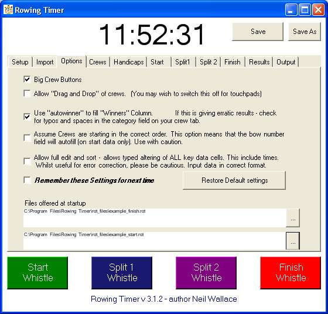

Options
Here you are presented with a few options.
These will undoubtably swell as the program develops further.
A few options deserve an explanation.
-
"allow full edit and sort".
When this is active, you can use keyboard entry in all the major cells. Including "Time" values.
-
"Autowinner" should normally be checked.
This scans the results for the fastest in each category.
-
Files offered at startup.
For our head races, I make sure these are links to Division one and Division two rot files.
